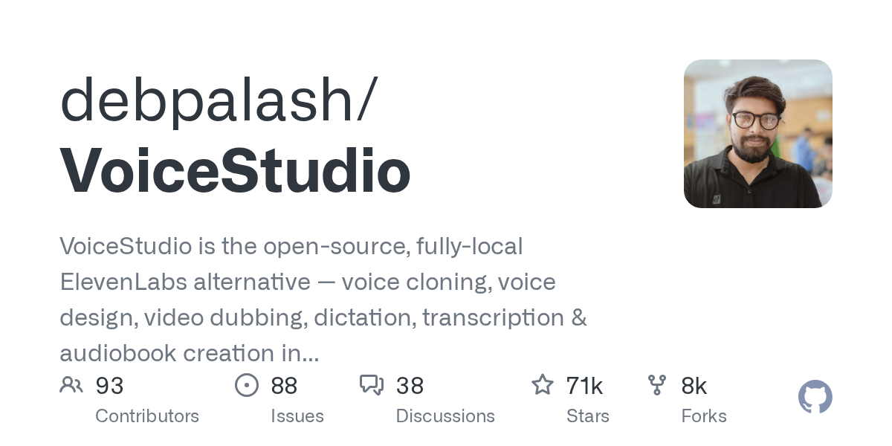
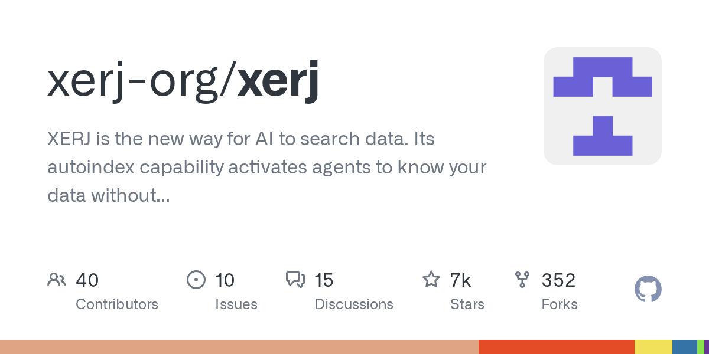
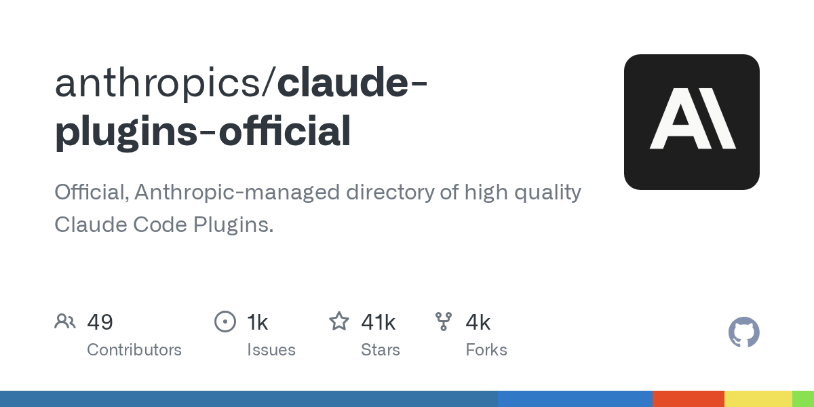
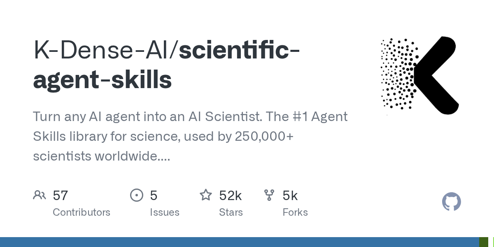
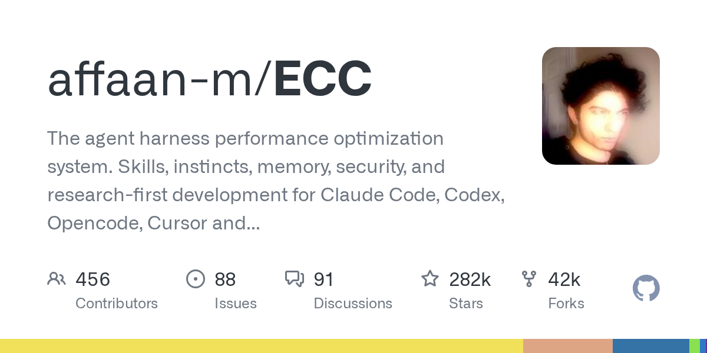
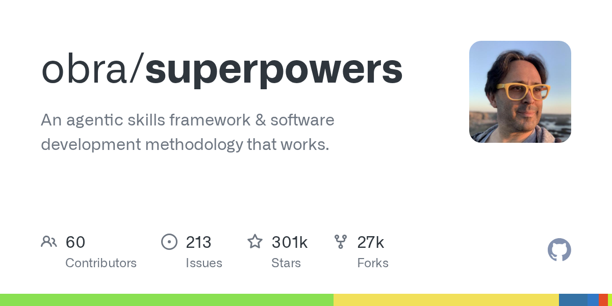
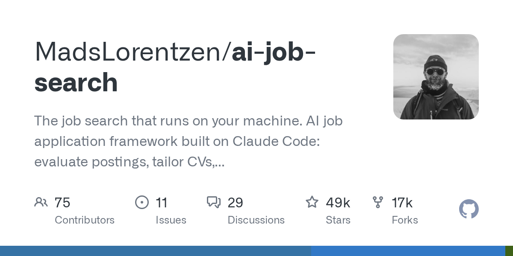
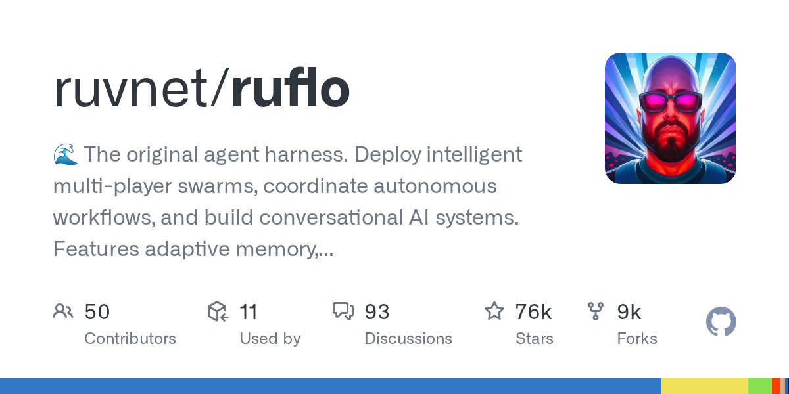
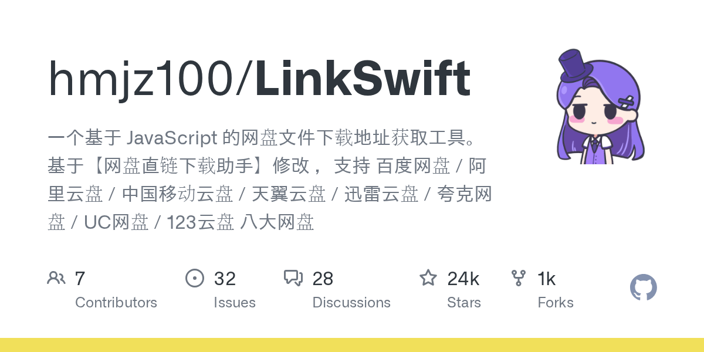

科技日报 | 2026-10-17
2026 年 10 月 17 日 周五 · GitHub Trending + Hacker News
今日关键词：Agent 工程化、本地推理、基准测试的盲区。
GitHub 上，Claude Code 插件、Agent Skills、上下文优化工具继续霸榜；HN 上，Mercor 用一张"基准地图"指出 90% 的工作时间还没有被 AI 评测覆盖，而 Anthropic 则顺手解开了密码学界悬了二十多年的一个谜。
一、GitHub Trending 今日热门 TOP 10
数据截至 2026-10-17，按"今日新增 Star"排序。
1. debpalash/VoiceStudio —— 本地版 ElevenLabs

🏷️ 基本信息
- 语言：Python
- 总 Star：71,611
- 今日新增：+2,301（今日第一）
- 地址：https://github.com/debpalash/VoiceStudio
📖 项目介绍
一个完全本地运行的开源语音工作台，目标是对标 ElevenLabs：声音克隆、音色设计、视频配音、听写、转写、有声书制作，覆盖 646 种语言。
✨ 技术亮点
- 全流程本地化，声音数据不出本机，对隐私敏感的团队很关键；
- 一个项目覆盖"克隆 → 合成 → 配音 → 转写"整条链，不用拼五个工具；
- 646 种语言的支持范围，在开源语音项目里属于第一梯队。
🎯 适合场景
播客与短视频配音、有声书批量生产、企业内部培训材料、需要数据合规的语音产品原型。
📚 学习价值
想理解"语音克隆产品"由哪些模块拼成，这个仓库是一张完整的工程地图：声纹提取、TTS、对齐、后处理、批量任务调度。
2. xerj-org/xerj —— 给 Agent 的"数据索引层"

🏷️ 基本信息
- 语言：Rust
- 总 Star：7,108
- 今日新增：+1,648
- 地址：https://github.com/xerj-org/xerj
📖 项目介绍
面向 AI 的数据搜索层。一条命令把代码、文档、日志、PDF 建好索引，供搜索、RAG、安全审计和 Agent 记忆使用。官方称相比 grep/sed 省 40 倍 token，并兼容 Elasticsearch 客户端。
✨ 技术亮点
- autoindex：不需要手写分块和向量化流水线；
- 40 倍 token 节省，直接打到 Agent 最贵的成本项；
- Elasticsearch 兼容，已有客户端可以低成本接入。
🎯 适合场景
代码库问答、企业文档检索、日志分析、Agent 长期记忆。
📚 学习价值
它代表了 2026 年的一个新共识：Agent 的瓶颈不是模型，而是"怎么把上下文喂进去"。索引层的设计，比提示词技巧更值得研究。
3. anthropics/claude-plugins-official —— Claude Code 官方插件目录

🏷️ 基本信息
- 语言：Python
- 总 Star：40,818
- 今日新增：+1,552
- 地址：https://github.com/anthropics/claude-plugins-official
📖 项目介绍
Anthropic 官方维护的 Claude Code 高质量插件目录，相当于给 Agent 生态发了一张"官方认证清单"。
✨ 技术亮点
- 由官方筛选，降低"装到恶意插件"的风险；
- 目录化组织，插件发现成本大幅下降；
- 标志着 Claude Code 从"一个工具"转向"一个平台"。
🎯 适合场景
团队统一 Claude Code 工具链、评估可用插件、搭建内部 Agent 工作流。
📚 学习价值
插件市场的第一批"官方目录"，往往是观察平台边界的最佳样本：哪些能力被官方认为该由插件承担，哪些留在核心。
4. K-Dense-AI/scientific-agent-skills —— 把 Agent 变成 AI 科学家

🏷️ 基本信息
- 语言：Python
- 总 Star：51,679
- 今日新增：+1,158
- 地址：https://github.com/K-Dense-AI/scientific-agent-skills
📖 项目介绍
面向科研的 Agent Skills 库：177 个经过验证的技能，外接 100 多个科学数据库，覆盖生物、化学、医学、药物发现。兼容 Cursor、Claude Code、Codex 等。
✨ 技术亮点
- 把"科研流程"拆成可复用的技能单元，而不是一个大而全的 Agent；
- 直连专业数据库，减少模型凭空编造；
- 跨平台兼容，不绑死某一个 Agent 产品。
🎯 适合场景
文献调研、实验设计辅助、化合物检索、跨数据库信息整合。
📚 学习价值
这是"垂直领域 Skills 化"的典型案例：专业能力不靠微调，靠一组可组合、可审计的技能。
5. affaan-m/ECC —— Agent 执行框架的"性能调优层"

🏷️ 基本信息
- 语言：JavaScript
- 总 Star：281,674
- 今日新增：+1,057
- 地址：https://github.com/affaan-m/ECC
📖 项目介绍
一个 Agent harness 性能优化系统，把技能、直觉、记忆、安全、研究优先的开发方式整合成一层，适配 Claude Code、Codex、Opencode、Cursor 等。
✨ 技术亮点
- 不只管"能不能做"，还管"做得稳不稳、快不快"；
- 记忆与技能的长期维护被纳入框架，而不是每次从零开始；
- 跨 harness 的设计，说明这层抽象正在形成事实标准。
🎯 适合场景
重度使用多个编码 Agent 的团队、需要长期维护 Agent 行为的项目。
📚 学习价值
值得关注它如何定义"Agent 运行时"：上下文、记忆、工具、安全策略，这四件事怎么被组织成一个可复用的壳。
6. obra/superpowers —— Agent 技能框架与方法论

🏷️ 基本信息
- 语言：Shell
- 总 Star：300,779
- 今日新增：+973
- 地址：https://github.com/obra/superpowers
📖 项目介绍
一套"能真正落地"的 Agent 技能框架与软件开发方法论。仓库已经冲到 30 万星，成为 Skills 生态里最有代表性的项目之一。
✨ 技术亮点
- 强调"方法论 + 工具"一起交付，而不是只给代码；
- 用 Shell 组织，接入门槛低；
- 技能可复用、可组合，适合团队沉淀自己的最佳实践。
🎯 适合场景
团队搭建 Agent 开发规范、把内部经验固化成 Skills。
📚 学习价值
它回答了一个关键问题：当 Agent 能写代码之后，人的价值在哪里？ 答案是把"怎么做事"沉淀成可执行的流程。
7. MadsLorentzen/ai-job-search —— 跑在自己电脑上的求职 Agent

🏷️ 基本信息
- 语言：Python
- 总 Star：48,780
- 今日新增：+898
- 地址：https://github.com/MadsLorentzen/ai-job-search
📖 项目介绍
基于 Claude Code 的本地求职框架：评估职位、定制简历、写求职信、准备面试，全部在自己的机器上完成。
✨ 技术亮点
- 隐私优先：简历和求职记录不上传第三方；
- 把求职拆成可复用的流水线，而不是每次重新问一遍模型；
- 可 fork、可改造，适合个人长期维护。
🎯 适合场景
个人求职、猎头批量初筛、职业转型准备。
📚 学习价值
这是"个人 Agent"的典型形态：不追求通用，只把一个高频、长周期、信息密集的流程做深。
8. ruvnet/ruflo —— 多智能体编排的老牌选手

🏷️ 基本信息
- 语言：TypeScript
- 总 Star：75,719
- 今日新增：+672
- 地址：https://github.com/ruvnet/ruflo
📖 项目介绍
自称"最早的 agent harness"，主打多智能体蜂群、自主工作流编排、对话式 AI 系统，内置自适应记忆、自学习、联邦协作和向量 RAG。
✨ 技术亮点
- 多智能体协同与任务分派；
- 自适应记忆 + 自学习，适合长期运行；
- 对接 Claude Code、Codex、Hermes 等多种运行时。
🎯 适合场景
复杂任务拆解、多角色协作、需要长期记忆的 Agent 系统。
📚 学习价值
多 Agent 系统最容易踩的坑是"看起来很热闹，实际没人对结果负责"。看它的任务归属与状态管理设计，比看演示更有价值。
9. hmjz100/LinkSwift —— 八大网盘直链工具

🏷️ 基本信息
- 语言：JavaScript
- 总 Star：23,952
- 今日新增：+538
- 地址：https://github.com/hmjz100/LinkSwift
📖 项目介绍
基于 JavaScript 的网盘文件下载地址获取工具，支持百度网盘、阿里云盘、中国移动云盘、天翼云盘、迅雷云盘、夸克网盘、UC 网盘、123 云盘八大平台。
✨ 技术亮点
- 一个脚本覆盖八个平台，解决了"每个网盘一个工具"的碎片化问题；
- 基于浏览器脚本生态，安装成本低。
🎯 适合场景
个人文件迁移、多网盘资源整理。
📚 学习价值
从工程角度看，它是一份"多平台接口差异"的活样本：不同网盘的鉴权、限速、直链规则如何被统一抽象。
⚠️ 使用第三方网盘工具前，请自行评估账号安全与平台条款风险。
10. mksglu/context-mode —— 给 Agent 的上下文"节流阀"

🏷️ 基本信息
- 语言：TypeScript
- 总 Star：30,303
- 今日新增：+449
- 地址：https://github.com/mksglu/context-mode
📖 项目介绍
面向 AI 编码 Agent 的上下文窗口优化工具：把工具输出放进沙盒（官方称减少 98%），持久化会话记忆，并通过 MCP + hooks 在 17 个平台上做路由。
✨ 技术亮点
- 工具输出沙盒化，避免一次
cat把上下文撑爆； - 会话记忆持久化，跨轮次不丢关键信息；
- MCP + hooks 的方式，接入面广。
🎯 适合场景
长会话编码、工具调用密集的 Agent、上下文成本敏感的项目。
📚 学习价值
它把一个常被忽视的事实摆上台面：Agent 的成本大头往往不是模型推理，而是反复搬运的上下文。
二、Hacker News 今日热榜 TOP 10
| # | 标题 | 热度 | 讨论 |
|---|---|---|---|
| 1 | Claude reveals ECDSA curve origins | 790 | 300 |
| 2 | 90% of US working hours are spent on tasks not covered well by AI benchmarks | 456 | 394 |
| 3 | I love software rendering | 311 | 197 |
| 4 | Waymo in Toronto | 305 | 409 |
| 5 | Apple ML Research: Muse Spark Open with MLX on Mac Studio | 295 | 144 |
| 6 | How the Claude Code team does code review | 294 | 274 |
| 7 | Llama.cpp on a jailbroken PS5 | 245 | 63 |
| 8 | Anthropic assigned highest junk credit rating in June | 238 | 75 |
| 9 | JPEG XL vs. AVIF for web use-cases | 228 | 158 |
| 10 | You could have invented transformers from memory | 215 | 60 |
1️⃣ 密码学界二十多年的谜，被 Claude 解开了

ECDSA 是当今使用最广的椭圆曲线签名标准，2000 年被 NIST 纳入 FIPS 186-2。标准里每条曲线都有一个 seed 参数，它的哈希值决定了曲线系数 b。问题是：这些 seed 从哪来的，NSA 从来没解释过。
二十多年来，这成了密码学界的一桩悬案，甚至有人悬赏寻找答案。Anthropic 今天发文称，他们借助 Claude 追查出了 seed 的来源——答案是一串带玩笑意味的口令短语的哈希（由 NSA 长期员工 Jerry Solinas 生成）。
Anthropic 特意强调了三件事：
- 这只是给多年猜测画上句号，不需要采取任何行动；
- 大多数研究者本来就信任这些曲线；
- 这不是安全漏洞，是一个"有趣的历史脚注"。
为什么值得关注：它展示了 AI 在"长链条考古式推理"上的能力——不是写代码，而是把散落在邮件、文档、代码注释里的线索串起来。这类任务过去只能靠人肉翻档案。
2️⃣ 90% 的工作时间，AI 基准测试根本没覆盖
Mercor 做了一件很"笨"但很重要的事：把 923 个职业、18,797 项任务，和 924 个 AI 基准逐一映射。
结论很刺眼：只有 208 项任务有基准覆盖，绝大部分岗位的日常工作，现有 benchmark 根本测不到。
这意味着两件事：
1. "模型跑分高"和"能干活"之间，有一道巨大的鸿沟；
2. 企业选型时，通用榜单的参考价值被高估了——真正该测的是你自己业务里的那几十个任务。
HN 评论区的高赞观点很一致：不是 benchmark 不够多，而是经济上有价值的任务太难被标准化。写代码、做数学题容易评分；协调、判断、沟通、处理例外，很难。
3️⃣ 为什么有人偏爱"软件渲染"
作者用一台 Dell OptiPlex 380，把 DOS 版 Quake 的软件渲染器跑到 800×600 锁 60 帧，并称之为"很长一段时间里最好的 DOS 体验"。
软件渲染的意思是：不用显卡，CPU 逐像素画每一帧。Doom、Duke Nukem 3D、初代 Quake 都是这么工作的。90 年代你只能在低分辨率下跑，或者买一块 3D 卡；今天有了第三种选择——用足够快的现代 CPU，跑当年没人跑得动的分辨率。
这篇文章真正迷人的地方不是怀旧，而是它揭示了一个常被忽略的事实：硬件性能的富余，会让老代码焕发第二次生命。同一份渲染器，二十年前是妥协，今天是风格。
4️⃣ Waymo 要去加拿大了，但先当两年"手动司机"
Waymo 宣布正式进入多伦多，目标是 2028 年迎来第一批乘客。
值得注意的是它的节奏：
- 先人工驾驶采集高精地图；
- 再由受过训练的自动驾驶专家在车上做验证；
- 最后才逐步开放无人驾驶服务。
这条"先地图、再验证、后运营"的路径，和很多公司"先喊 L4、再补安全"的做法正好相反。Waymo 在多伦多要面对的新变量是冬季：积雪覆盖车道线、盐渍反光、低能见度，这些都是凤凰城不会遇到的。
看点：自动驾驶的真正门槛，可能不是算法，而是一个城市一个城市地做工程。
5️⃣ 四台 Mac Studio，跑近万亿参数模型
Apple ML 研究团队发了一篇很有分量的文章：用最新版 MLX，在 4 台 M5 Ultra Mac Studio 上分布式运行近万亿参数的 Muse Spark Open，解码速度超过 36 token/s——高于人类平均阅读速度。
几个关键数字：
- 单机最高 512GB 统一内存；
- 通过 RDMA over Thunderbolt 做机器间通信；
- 支持流水线并行（2 台）与张量并行（2 台 / 4 台）三种方案。
意义：过去"私有化部署大模型"意味着买 GPU 服务器、建机房；现在一张桌子、四台 Mac Studio 就能跑前沿级模型。本地推理的门槛，正在从"资本支出"变成"桌面设备"。
6️⃣ Claude 写了 90% 的代码，那代码评审怎么办？
这是一篇所有用 AI 写代码的人都该读的文章。
Claude Code 团队披露：Claude 现在写了 Claude Code 自身约 90% 的代码。2026 年 6 月到 9 月，合并的 PR 数量翻了一倍多，而被回滚的比例下降了 40% 以上。
他们的做法不是"取消评审"，而是重新定义评审：
- 大部分"读代码"的工作交给机器——覆盖率、静态检查、自动化测试；
- 人的时间集中在判断"这个改动该不该存在"；
- 强调"You land it, you own it"——谁合并，谁负责；
- 把"容易撤销"当成核心基础设施来建设。
给普通团队的启示：当代码产量翻倍，评审的瓶颈不再是"看得快不快"，而是"人的注意力该花在哪"。答案通常是：需求正确性、边界条件、以及可回滚性。
7️⃣ 破解版 PS5 跑 llama.cpp，能跑 Qwen 3.8
开发者 cobanov 发布了 PS5LM：在已越狱的 PS5 上原生运行 llama.cpp，任何 GGUF 模型都能加载，首个验证模型是 Qwen 3.8。
这件事的象征意义大于实用意义：
- 游戏主机的硬件是封闭但性能可观的；
- 越狱之后，它变成了一台便宜的推理设备；
- llama.cpp 的跨平台能力再次被验证——从树莓派到游戏机，同一套代码。
提醒：越狱会失去保修、可能违反平台条款，且有安全风险，不建议普通用户尝试。
8️⃣ Anthropic 被评"垃圾级"？先看清评级机构是谁
FT 报道称，Anthropic 在 6 月被评级机构 KBRA 授予 BB+——按标准分类属于"垃圾级"（投机级），距离投资级只差一档。
报道里几个值得注意的细节：
- Anthropic 向 KBRA 披露的材料没有包含自由现金流和 EBITDA，分析师只能自己估算；
- 为 Anthropic 和 OpenAI 服务的银行家，一直在游说大型评级机构，希望在 IPO 时拿到投资级评级；
- 市场对 Anthropic IPO 的估值预期超过 2 万亿美元。
HN 评论区很快出现了反驳：
- KBRA 不是三大评级机构，债券买家未必参考它；
- BB+ 对一家年轻公司来说是正常评级，用"最高垃圾级"做标题有引导性；
- 但也有人提醒：给高风险资产贴接近投资级的标签，历史上不是没出过事。
怎么看：这条新闻的价值不在评级本身，而在于它暴露了 AI 公司的资本结构问题——估值增长极快，现金流却还没跟上。
9️⃣ JPEG XL 全面落地后，和 AVIF 到底谁更强？

Jake Archibald 做了一次很扎实的实测。背景是：JPEG XL 已经在所有主流浏览器落地，终于可以认真比较了。
结论（有明确前提）：
- 有损照片：AVIF 几乎总是更小。默认压缩强度下，最好的 JXL 通常比 AVIF 大 15–25%；最高强度下差距缩小到 6–20%；
- 截图和插画：AVIF 优势巨大，JXL 大 30–90%；
- 少数离群样本：JXL 能赢，所以追求极致时值得两个都试；
- 编码器影响很大：新的 JXL 编码器
jixel通常比libjxl更小。
实践建议：面向 Web 的通用图片，继续用 AVIF；需要无损重压缩、渐进解码、HDR 等特性时，JPEG XL 仍是更好的选择。
🔟 从"记忆"出发，重新发明 Transformer

Alex Wang 写了一篇非常漂亮的推导文，核心观点只有一句：Transformer 的每一层，本质上都是一个记忆存储器。
文章沿着一条清晰的路径展开：
1. 先用外积构造一个最简单的记忆库；
2. 发现记忆一多就会互相干扰（interference）；
3. 推导出"最优线性记忆"的形式；
4. 把 MLP 解释为非线性记忆；
5. 用高阶项进一步降低干扰；
6. 最后把 self-attention 解释为一种非参数化的记忆读取；
7. 讨论长上下文下如何同时处理大量键值对。
为什么值得读：大多数 Transformer 教程从矩阵乘法讲起，这篇从"怎么存、怎么取"讲起。理解了记忆视角，很多架构设计——KV cache、检索增强、长上下文——会突然变得顺理成章。
三、今日趋势观察
1. Agent 生态进入"工程化"阶段
今天的 GitHub 榜单几乎被 Agent 基础设施包场：插件目录（claude-plugins-official）、技能库（scientific-agent-skills、superpowers）、运行时优化（ECC、ruflo）、上下文管理（context-mode）、数据索引（xerj）。
这说明竞争焦点已经从"模型能不能做"转向"做得好不好维护"。提示词技巧的边际收益在下降，工程骨架的价值在上升。
2. 本地推理正在成为一条独立赛道
VoiceStudio（本地语音）、MLX + Mac Studio（本地大模型）、PS5 跑 llama.cpp（极客本地推理）——三件事指向同一个方向：算力正在回到个人手里。
背后的驱动力很现实：隐私合规、调用成本、以及"不想被 API 限流"。
3. 评测与现实之间的鸿沟被正式量化
Mercor 的地图给出了一个残酷的数字：只有 208 / 18,797 项任务有基准覆盖。这解释了为什么"榜单第一"的模型到了真实业务里可能平平无奇。
对企业的直接建议：别只看公开榜单，建自己的 50 条黄金用例，那比任何 benchmark 都准。
4. "老问题"正在被新工具重新回答
- 二十多年的 ECDSA seed 悬案，被 AI 辅助推理解开；
- 二十多年前的软件渲染器，被现代 CPU 跑出新生；
- 争论多年的图片格式，终于有了完整实测；
- 十年前需要博士才能理解的 Transformer，被一篇"从记忆出发"的文章讲清楚。
技术史不是一条直线，很多"过时"的东西，只是在等一个新的上下文。
数据来源
- GitHub Trending：https://github.com/trending?since=daily（2026-10-17 抓取）
- Hacker News：hn.algolia.com 24 小时热门，按 points 排序并去重
- 图片：GitHub OpenGraph 卡片 + 各站点 og:image
日报由自动化管线生成，数据以原始链接为准。